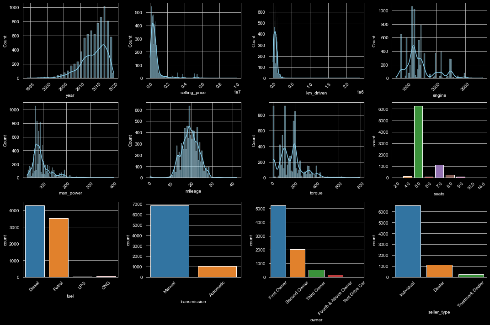

Multiple Linear Regression: Application on FARS Dataset
Mathematical Formulation
When modeling the relationship between a dependent variable y and multiple independent variables x_1, x_2, \dots, x_n, the linear equation can be written as: \begin{equation}
y_i=\beta_0+\beta_1 x_{i 1}+\beta_2 x_{i 2}+\cdots+\beta_n x_{i n}+\epsilon_i
\end{equation}
where:
y_i is the observed value of the dependent variable for the i^{th} observation.
x_1, x_2, \dots, x_n are the values of the independent variables for the i^{th} observation.
\beta_0, \beta_1, \beta_n are the regression coefficients, with \beta_0 being the y-intercept.
\epsilon_i is the error term for the i^{th} observation, capturing the difference between the observed value and the value predicted by the model.
The requirement here is to find the \beta_i that minimizes the meas square error of \epsilon_i. The above could be solved in multiple ways. However, one easy way to solve it is through matrix multiplication since CPU’s can deal faster with matrix manipulation.
Matrix Notation
Given:
\boldsymbol{X} is the design matrix of size m \times (n + 1).
\boldsymbol{y} is a column vector of size m \times 1 containing the dependent variable values.
\boldsymbol{\beta} is a column vector of size (n + 1) \times 1 containing the regression coefficients.
\boldsymbol{\epsilon} is a column vector of size m \times 1 representing the errors.
The relationship is given by: \begin{equation}
\large{y} = \large{X} \beta + \epsilon
\end{equation}
To determine the value of \beta, one might think to rearrange the equation as:
However, this representation is not accurate in the context of matrix operations. The inaccuracy arises due to the nature of matrices and how they are manipulated. Here’s a breakdown of the issues:
Matrix Division: In the realm of matrices, there isn’t a direct concept of division like there is with regular numbers. So, saying \beta = \frac{y}{X} doesn’t have a straightforward meaning.
Matrix Multiplication: Matrix multiplication is not commutative. This means that the product AB is not necessarily the same as the product BA. So, even if we were to try to “isolate” \beta by some matrix operation, it wouldn’t be as simple as dividing both sides by X.
Correct Approach: The correct way to “isolate” \beta when dealing with matrices is to multiply both sides of the equation by the inverse of X (assuming X is invertible). The equation would look something like: \beta = X^{-1}y. Note that this equation assumes that X is a square matrix and has an inverse. If X is not square, or doesn’t have an inverse, other methods like the Moore-Penrose pseudoinverse would be used to estimate \beta.
Dimensionality: Even if we were to entertain the idea of matrix division, the dimensions must be compatible. In the equation y = X\beta + \epsilon, y is a column vector of size m \times 1, X is a matrix of size m \times n, and \beta is a column vector of size n \times 1. Dividing an m \times 1 vector by an m \times n matrix doesn’t produce a consistent result in terms of matrix dimensions.
The reason we use the equation $ = (^T )^{-1} ^T $ instead of $ = ^{-1} $ is due to the structure and properties of the design matrix ( ) in linear regression.
Non-Square Matrix: In most real-world applications of linear regression, \mathbf{X} is not a square matrix. It usually has more rows (observations) than columns (predictors). Only square matrices possess inverses in the traditional sense. Therefore, \mathbf{X}^{-1} doesn’t exist for these cases.
Pseudo-Inverse: The expression (\mathbf{X}^T \mathbf{X})^{-1} \mathbf{X}^T is known as the Moore-Penrose pseudo-inverse of \mathbf{X}. This pseudo-inverse provides a means to approximate an inverse.
Projection onto Column Space: The term \mathbf{X}^T \mathbf{y} can be interpreted as projecting the response vector \mathbf{y} onto the column space of \mathbf{X}.
Minimization of Residuals: The expression (\mathbf{X}^T \mathbf{X})^{-1} \mathbf{X}^T originates from differentiating the sum of squared residuals with respect to \boldsymbol{\beta} and setting it to zero.
Finally, what we are trying to accomplish is to reduce the error between the model and the actual data:
We’ll be applying this concept to the cars dataset.
Application on Cars selling Dataset
#import required librariesimport pandas as pdimport osimport warningsimport matplotlib.pyplot as pltimport seaborn as snsfrom sklearn.model_selection import train_test_splitfrom sklearn.linear_model import LinearRegressionfrom sklearn.metrics import mean_squared_error, r2_scorefrom sklearn.preprocessing import OneHotEncoderfrom statsmodels.stats.outliers_influence import variance_inflation_factor#inline plots%matplotlib inline# Set Seaborn style to "whitegrid" for a white background with grid linessns.set_style("whitegrid")#supress warnings!warnings.simplefilter(action='ignore', category=Warning)# Set the display option to show all columnspd.set_option('display.max_columns', None)print("required libraries loaded successfully!")
# Load the cars datasetcars = pd.read_csv("https://raw.githubusercontent.com/AhmedAredah/MachineLearningBasics/main/data/cars.csv")cars.describe()
year
selling_price
km_driven
seats
count
8128.000000
8.128000e+03
8.128000e+03
7907.000000
mean
2013.804011
6.382718e+05
6.981951e+04
5.416719
std
4.044249
8.062534e+05
5.655055e+04
0.959588
min
1983.000000
2.999900e+04
1.000000e+00
2.000000
25%
2011.000000
2.549990e+05
3.500000e+04
5.000000
50%
2015.000000
4.500000e+05
6.000000e+04
5.000000
75%
2017.000000
6.750000e+05
9.800000e+04
5.000000
max
2020.000000
1.000000e+07
2.360457e+06
14.000000
The describe method in pandas provides a summary of the central tendency, dispersion, and shape of the distribution of a dataset. It returns a DataFrame that shows various descriptive statistics.
Here’s what each row in the output means:
count: The number of non-missing values for each variable. In this case, each variable has 342 non-missing values.
mean: The average value of each variable.
std: The standard deviation of each variable, which measures the amount of variation or dispersion.
min: The minimum value of each variable.
25%: The 25th percentile value of each variable.
50%: The 50th percentile value (or median) of each variable.
75%: The 75th percentile value of each variable.
max: The maximum value of each variable.
In the context of linear regression, these descriptive statistics can help you understand the distribution of your variables and guide your data preprocessing steps.
One common issue to address during data preprocessing is the handling of missing values (NA values). There are several ways to deal with missing values:
Remove rows with missing values: This is the simplest approach, but it may result in loss of valuable data. python data = data.dropna()
Replace missing values: You can replace missing values with a specific value, such as the mean or median of the variable. python data['variable'].fillna(data['variable'].mean(), inplace=True)
Use predictive imputation: This involves using other variables in the dataset to predict and fill in missing values. This can be done using machine learning algorithms or other statistical methods.
Before fitting a linear regression model, it’s important to check for outliers, as they can have a significant impact on your model. The min and max values in the describe output can help you identify any extreme values that might be outliers. You may also want to plot your data to visually inspect for outliers.
Additionally, the mean and std values can be used to standardize your variables, which is a common preprocessing step for linear regression. Standardizing your variables can make it easier to interpret the coefficients of your linear regression model, especially when your variables are on different scales.
In this case, We will just remove rows with missing values since it is easier but this could have a huge impact on the dataset.
# Drop rows where any cell contains NA or NAN cars = cars.dropna()# show the top 5 rowscars.head()
name
year
selling_price
km_driven
fuel
seller_type
transmission
owner
mileage
engine
max_power
torque
seats
0
Maruti Swift Dzire VDI
2014
450000
145500
Diesel
Individual
Manual
First Owner
23.4 kmpl
1248 CC
74 bhp
190Nm@ 2000rpm
5.0
1
Skoda Rapid 1.5 TDI Ambition
2014
370000
120000
Diesel
Individual
Manual
Second Owner
21.14 kmpl
1498 CC
103.52 bhp
250Nm@ 1500-2500rpm
5.0
2
Honda City 2017-2020 EXi
2006
158000
140000
Petrol
Individual
Manual
Third Owner
17.7 kmpl
1497 CC
78 bhp
12.7@ 2,700(kgm@ rpm)
5.0
3
Hyundai i20 Sportz Diesel
2010
225000
127000
Diesel
Individual
Manual
First Owner
23.0 kmpl
1396 CC
90 bhp
22.4 kgm at 1750-2750rpm
5.0
4
Maruti Swift VXI BSIII
2007
130000
120000
Petrol
Individual
Manual
First Owner
16.1 kmpl
1298 CC
88.2 bhp
11.5@ 4,500(kgm@ rpm)
5.0
From the above table we need to clean the dataset first and remove strings from columns ‘mileages’, ‘engine’, ‘max_power’, and ‘torque’
# List of columns to processcolumns_to_process = ['mileage', 'engine', 'max_power']for column in columns_to_process:# Convert the column to string type cars[column] = cars[column].astype(str)# Extract the first numerical value (assumes format is "value unit") cars[column] = cars[column].str.split().str[0]# Convert those values to float, set others to NaN if they can't be converted cars[column] = pd.to_numeric(cars[column], errors='coerce')
import re# Function to extract the numeric part before 'Nm'def extract_torque_value(s): match = re.search(r'(\d+)Nm', s)returnfloat(match.group(1)) if match elseNone# Apply the function to the torque columncars['torque'] = cars['torque'].apply(extract_torque_value)cars.dropna()
name
year
selling_price
km_driven
fuel
seller_type
transmission
owner
mileage
engine
max_power
torque
seats
0
Maruti Swift Dzire VDI
2014
450000
145500
Diesel
Individual
Manual
First Owner
23.40
1248
74.00
190.0
5.0
1
Skoda Rapid 1.5 TDI Ambition
2014
370000
120000
Diesel
Individual
Manual
Second Owner
21.14
1498
103.52
250.0
5.0
7
Maruti 800 DX BSII
2001
45000
5000
Petrol
Individual
Manual
Second Owner
16.10
796
37.00
59.0
4.0
8
Toyota Etios VXD
2011
350000
90000
Diesel
Individual
Manual
First Owner
23.59
1364
67.10
170.0
5.0
9
Ford Figo Diesel Celebration Edition
2013
200000
169000
Diesel
Individual
Manual
First Owner
20.00
1399
68.10
160.0
5.0
...
...
...
...
...
...
...
...
...
...
...
...
...
...
8122
Hyundai i20 Magna 1.4 CRDi
2014
475000
80000
Diesel
Individual
Manual
Second Owner
22.54
1396
88.73
7.0
5.0
8123
Hyundai i20 Magna
2013
320000
110000
Petrol
Individual
Manual
First Owner
18.50
1197
82.85
7.0
5.0
8125
Maruti Swift Dzire ZDi
2009
382000
120000
Diesel
Individual
Manual
First Owner
19.30
1248
73.90
190.0
5.0
8126
Tata Indigo CR4
2013
290000
25000
Diesel
Individual
Manual
First Owner
23.57
1396
70.00
140.0
5.0
8127
Tata Indigo CR4
2013
290000
25000
Diesel
Individual
Manual
First Owner
23.57
1396
70.00
140.0
5.0
7033 rows × 13 columns
Before diving into machine learning, understanding the descriptive statistics of our data is crucial. It provides insights into the distribution, tendencies, and range of our data. This preliminary step ensures that we’re aware of the data’s characteristics, helping in making informed decisions about preprocessing, model selection, and interpretation of results. Such an understanding can aid in identifying anomalies, ensuring data quality, and setting the right expectations from the model’s predictions.
cars.describe()
year
selling_price
km_driven
mileage
engine
max_power
torque
seats
count
7906.000000
7.906000e+03
7.906000e+03
7906.000000
7906.000000
7906.000000
7033.000000
7906.000000
mean
2013.983936
6.498137e+05
6.918866e+04
19.419861
1458.708829
91.587374
158.266032
5.416393
std
3.863695
8.135827e+05
5.679230e+04
4.036263
503.893057
35.747216
107.169575
0.959208
min
1994.000000
2.999900e+04
1.000000e+00
0.000000
624.000000
32.800000
1.000000
2.000000
25%
2012.000000
2.700000e+05
3.500000e+04
16.780000
1197.000000
68.050000
90.000000
5.000000
50%
2015.000000
4.500000e+05
6.000000e+04
19.300000
1248.000000
82.000000
146.000000
5.000000
75%
2017.000000
6.900000e+05
9.542500e+04
22.320000
1582.000000
102.000000
200.000000
5.000000
max
2020.000000
1.000000e+07
2.360457e+06
42.000000
3604.000000
400.000000
789.000000
14.000000
# Set up the matplotlib figurefig, axes = plt.subplots(nrows=3, ncols=4, figsize=(15, 10))# Plot the distribution of each variablehist1 = sns.histplot(data=cars, x='year', kde=True, ax=axes[0, 0], color='blue')hist2 = sns.histplot(data=cars, x='selling_price', kde=True, ax=axes[0, 1], color='blue')hist3 = sns.histplot(data=cars, x='km_driven', kde=True, ax=axes[0, 2], color='blue')hist4 = sns.histplot(data=cars, x='engine', kde=True, ax=axes[0, 3], color='blue')hist5 = sns.histplot(data=cars, x='max_power', kde=True, ax=axes[1, 0], color='blue')hist6 = sns.histplot(data=cars, x='mileage', kde=True, ax=axes[1, 1], color='blue')hist7 = sns.histplot(data=cars, x='torque', kde=True, ax=axes[1, 2], color='blue')# Plot the count of each category for categorical variablesseats_plot = sns.countplot(data=cars, x='seats', ax=axes[1, 3])fuel_plot = sns.countplot(data=cars, x='fuel', ax=axes[2, 0])transmission_plot = sns.countplot(data=cars, x='transmission', ax=axes[2, 1])owner_plot = sns.countplot(data=cars, x='owner', ax=axes[2, 2])seller_plot = sns.countplot(data=cars, x='seller_type', ax=axes[2, 3])# Make the x-axis text vertical for all plotsfor ax in axes.flatten(): plt.sca(ax) plt.xticks(rotation=45)# Adjust the plotplt.tight_layout()plt.show()
When applying linear regression to this dataset, it’s crucial to consider these distributions. The insights derived from these plots can help in feature selection, outlier detection, and in understanding the relationships between variables. For instance, the dominance of diesel and petrol cars might mean that other fuel types have less influence on the selling price. Similarly, the large number of manual transmission cars might imply that automatic transmission could be a premium feature, potentially impacting the price.
from the above distribution we find that selling price, and km_driven are positively skewed and we need to apply a transformation function to make it normally distributed.
import numpy as npfig, axes = plt.subplots(nrows=1, ncols=2, figsize=(10, 5))transformed_data = np.log1p(cars['selling_price']) # log1p helps in dealing with zero values in the original datatransformed_data_2 = np.log1p(cars['km_driven'])sns.histplot(transformed_data, ax=axes[0]);sns.histplot(transformed_data_2, ax=axes[1]);

We will compare the regression model with and without the transformation
# Calculate VIF for each predictor variablecars_numeric = cars.select_dtypes(include='number')cars_numeric = cars_numeric.fillna(cars_numeric.mean())vif_data = pd.DataFrame()vif_data["variable"] = cars_numeric.columnsvif_data["VIF"] = [variance_inflation_factor(cars_numeric.values, i) for i inrange(cars_numeric.shape[1])]vif_data.head(n=10)
variable
VIF
0
year
140.187417
1
selling_price
4.337223
2
km_driven
2.993602
3
mileage
40.354886
4
engine
41.552858
5
max_power
34.167509
6
torque
7.961410
7
seats
66.993390
Variance Inflation Factor (VIF) is a measure that helps to identify multicollinearity in regression models. When interpreting the VIF, a general rule of thumb is that a VIF above 5-10 suggests a problematic amount of collinearity. Given the high VIF values for ‘Year’, ‘mileage’, ‘engine’, ‘max_power’, and ‘Seats’, one should consider further analysis or remedial measures to address potential multicollinearity before proceeding with building a regression model.
From this, I will drop the highest 2 VIF column value and redo the analysis again.
For the categorical data, the regression model does not understand strings (text) so we need to find a way to transfer this text in numbers. one way is to encode them which converts the categories into a series of 1,2,3 coresponding to the categorical order. OneHoteEncder does this job for us.
# Concatenate encoded features with the original dataframecars = pd.concat([cars, encoded_df], axis=1)# Drop the original categorical columns and other non-numeric columnscars = cars.drop(columns=categorical_columns + ['name', 'torque'])
Again, let’s make sure we dont have any missing values before we continue by filling with the mean value.
# Split the data into train and test setsX_train, X_test, y_train, y_test = train_test_split(X, y, test_size=0.2, random_state=42)# Create and train the Linear Regression modellin_reg = LinearRegression()lin_reg.fit(X_train, y_train)# Make predictions on the test sety_pred = lin_reg.predict(X_test)# Evaluate the model's performancer2 = r2_score(y_test, y_pred)print(f"R^2 (coefficient of determination): {r2:.2f}")mse = mean_squared_error(y_test, y_pred)print(f"Mean Squared Error: {mse:.2f}")# Model's coefficients and interceptprint(f"Intercept: {lin_reg.intercept_}")print(f"Coefficients: {lin_reg.coef_}")
# Selecting the first feature for demonstrationfeature_index =0feature_name = X.columns[feature_index]plt.figure(figsize=(10, 6))# Scatter plot of actual vs. predictedplt.scatter(X_test[feature_name], y_test, color='blue', label='Actual Values')plt.scatter(X_test[feature_name], y_pred, color='red', marker='x', label='Predicted Values')plt.title('Regression Fit for Feature: '+ feature_name)plt.xlabel(feature_name)plt.ylabel('Selling Price')plt.legend()plt.grid(True)plt.show()
The error plot indicates the error distribution is not random and there is a trend in the error that the model could not capture. Let’s then try the second regression model where we incorporate the transformation.
Second regression model with transformation
now, lets transform the selling price and km_driven columns using log() function and create a new regression model
# Split the data into train and test setsX_train, X_test, y_train, y_test = train_test_split(X, y, test_size=0.2, random_state=42)# Drop rows with NaN values from X_trainX_train = X_train.dropna()# Synchronize y_train with the updated X_trainy_train = y_train.loc[X_train.index]X_test = X_test.dropna()y_test = y_test.loc[X_test.index]# Create and train the Linear Regression modellin_reg = LinearRegression()lin_reg.fit(X_train, y_train)# Make predictions on the test sety_pred = lin_reg.predict(X_test)# Evaluate the model's performancer2 = r2_score(y_test, y_pred)print(f"R^2 (coefficient of determination): {r2:.2f}")mse = mean_squared_error(y_test, y_pred)print(f"Mean Squared Error: {mse:.2f}")# Model's coefficients and interceptprint(f"Intercept: {lin_reg.intercept_}")print(f"Coefficients: {lin_reg.coef_}")
# Selecting the first feature for demonstrationfeature_index =0feature_name = X.columns[feature_index]plt.figure(figsize=(10, 6))# Scatter plot of actual vs. predictedplt.scatter(X_test[feature_name], y_test, color='blue', label='Actual Values')plt.scatter(X_test[feature_name], y_pred, color='red', marker='x', label='Predicted Values')plt.title('Regression Fit for Feature: '+ feature_name)plt.xlabel(feature_name)plt.ylabel('Selling Price')plt.legend()plt.grid(True)plt.show()
Here, the error plot indicates the error is random and does not show any trend in the data. Thus the model we have is much better than the previous model.
by doing the transformation, we gained around 23% in the fit.